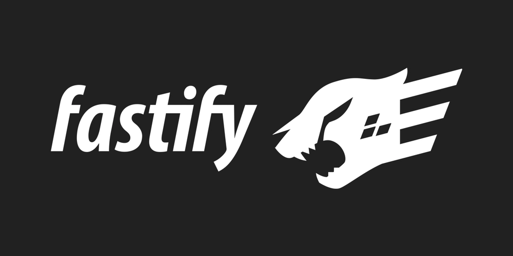

Fastify
Высокопроизводительный веб-фреймворк для Node.js, вдохновлённый Hapi и Express. Лучший выбор для высоконагруженных API и микросервисов.


Версия
4.28.x (стабильная)
Еженедельные загрузки
~3.5 млн (npm)
Производительность
~45k req/s (один из самых быстрых)
Используют
Netflix, Uber, Future
Что такое Fastify?
Fastify — это веб-фреймворк для Node.js, ориентированный на максимальную производительность, низкие накладные расходы и богатую экосистему плагинов.
Благодаря встроенной валидации JSON-схем (используя JSON Schema), быстрому парсингу и эффективной работе с асинхронностью, Fastify может обрабатывать до 2-3 раз больше запросов в секунду, чем Express.
При этом он сохраняет простоту использования, предлагая интуитивно понятный API и обширную документацию. Fastify — идеальный выбор для современных высоконагруженных проектов.

Ключевые особенности
Молниеносная скорость
Один из самых быстрых Node.js фреймворков, близкий к производительности чистого http-сервера.
Валидация схем (JSON Schema)
Автоматическая валидация входящих данных с помощью JSON Schema и компиляция сериализаторов.
Архитектура плагинов
Мощная система плагинов, которая позволяет легко расширять функциональность и повторно использовать код.
Обработка ошибок
Встроенная стандартизированная обработка ошибок с поддержкой HTTP-статусов.
Типизация
Отличная поддержка TypeScript, подробные типы и декораторы.
Логирование из коробки
Встроенный pino-логгер с невероятной производительностью и структурированными логами.
Быстрый старт с Fastify
Высокопроизводительный сервер с валидацией
const fastify = require('fastify')({ logger: true });
// Схема валидации для POST /api/user
const userSchema = {
schema: {
body: {
type: 'object',
required: ['name', 'email'],
properties: {
name: { type: 'string' },
email: { type: 'string', format: 'email' },
age: { type: 'number', minimum: 18 }
}
},
response: {
201: {
type: 'object',
properties: { message: { type: 'string' }, id: { type: 'string' } }
}
}
}
};
// GET маршрут
fastify.get('/', async (request, reply) => {
return { message: 'Hello from Fastify!' };
});
// POST маршрут с валидацией
fastify.post('/api/user', userSchema, async (request, reply) => {
const { name, email } = request.body;
// Логика создания пользователя
reply.code(201).send({ message: `User ${name} created`, id: '123' });
});
// Запуск сервера
const start = async () => {
try {
await fastify.listen({ port: 3000, host: '0.0.0.0' });
console.log(`Server listening on http://localhost:3000`);
} catch (err) {
fastify.log.error(err);
process.exit(1);
}
};
start();
Плюсы и минусы
Преимущества
- ⚡ Высокая производительность — один из самых быстрых Node.js фреймворков
- 🧩 Плагинная архитектура — легко расширять и переиспользовать модули
- 📏 Встроенная валидация — JSON Schema обеспечивает надёжность и скорость
- 📝 Отличное логирование — pino логгер с минимальным оверхедом
- 🔒 TypeScript ready — полная поддержка типов с первых дней
Недостатки
- 📚 Меньше сообщество — чем у Express, но активно растёт
- 🔄 Кривая обучения — плагины и схемы требуют привыкания
- 🚧 Меньше готовых middleware — из-за философии плагинов всё нужно искать/писать под Fastify
- 💡 Не так прост для абсолютных новичков — требует понимания схем и асинхронности
Часто задаваемые вопросы
Согласно многим бенчмаркам, Fastify может обрабатывать от 2 до 3 раз больше запросов в секунду по сравнению с Express, при этом потребляя меньше памяти. Это достигается за счёт оптимизированного парсинга, встроенной валидации схем и асинхронного подхода без лишних абстракций.
Если производительность и масштабируемость являются критичными для вашего проекта — определённо да. Fastify предлагает схожий API, но с лучшей производительностью. Однако для небольших проектов или прототипов миграция может быть неоправданной.
Fastify имеет богатую экосистему официальных и сторонних плагинов. Чтобы зарегистрировать плагин, используйте fastify.register(plugin, options). Плагины могут добавлять маршруты, декораторы, хуки и всё что угодно.